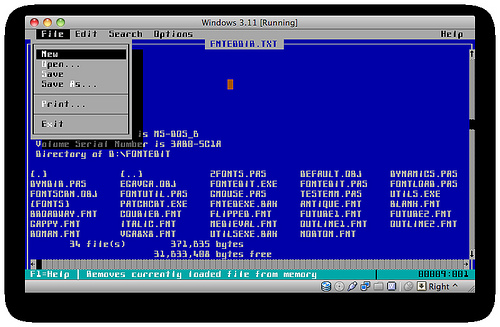
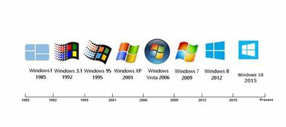
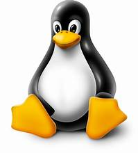
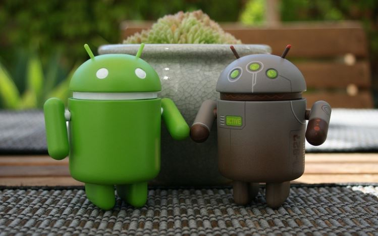

Sistem operasi adalah hal yang tidak bisa dipisahkan dari perangkat digital karena memiliki peran yang krusial dalam membantu pengguna untuk melakukan berbagai aktivitas melalui perangkat tersebut. Kamu masih belum tahu apa itu sistem operasi? Yup benar, setiap hari pasti kamu menggunakan smartphone baik itu Android atau iOs, menggunakan komputer dan laptop dengan sistem operasi Windows, Linux, dan MacOs kan? Jika kamu belum tahu apa itu sistem operasi, maka itulah contoh sistem operasi yang kamu temui sehari-hari untuk membantu kamu dalam menjalankan berbagai kegiatan digital.
Definisi umum dari sistem operasi adalah sebuah perangkat lunak sistem yang mampu mengelola sumber daya (resources) dari software dan hardware agar dapat berjalan dengan baik serta memudahkan proses interaksi dengan pengguna atau user (brainware). Jika kita analogikan sederhana, hubungan antara operating system dengan komputer adalah seperti kendaraan bermotor dan bahan bakar. Dimana, tanpa adanya bahan bakar, tentu saja kendaraan bermotor tidak akan bisa berjalan dengan semestinya. Sama halnya dengan sistem operasi, dimana anda tidak akan bisa menggunakan perangkat komputer apabila tidak adanya OS. Begitu juga sebaliknya, apabila anda mempunyai perangkat sistem dan tidak mempunyai komputer maka menjadi tidak berguna.
Oleh karena itu, pada artikel kali ini kami akan membahas seputar pemanfaatan sistem operasi dalam kehidupan sehari hari beserta komponen dan cara kerjanya. Sehingga informasi yang didapatkan mampu memberikan gambaran secara lebih jelas terkait hubungan antara OS dengan aktivitas manusia itu sendiri.
Dilansir dari Sejarah diciptakannya DOS dimulai pada tahun 1980-an dimana ketika itu sebuah tim yang bernama Paterson yang berasal dari Seattle Computer menulis sebuah program sistem bernama Quick and Dirty Operating System atau disingkat dengan QDOS. Kemudian Paterson memasarkan sistem buatanya itu dengan nama 86-DOS karena memang dikhususkan untuk komputer Intel. Setelah itu ternyata yang membeli QDOS adalah Bill Gates (Pendiri Microsoft). Tidak tanggung-tanggung yang dibeli oleh bill gates adalah licensinya, sehingga bill gates bisa memasarkan sendiri.
Pemasaran yang dilakukan oleh Bill Gates ternyata tertuju kepada perusahaan raksasa pada waktu itu yang bernama IBM. Kemudia Bill Gates menjual QDOS ke IBM. Lalu IBM dengan basis dari QDOS meluncurkan kembali sebuah sistem operasi bernama PC-DOS yang dibeli dari microsoft. Setelah sukses menjual QDOS ke IBM, kemudia microsoft terus melakukan pengembangan sendiri dari licensi yang dia punya.
Akhirnya pada tahun yang sama microsoft untuk pertama kalinya menjual sebuah sistem operasi yang mereka beri nama MS-DOS yang terus dikembangkan sampai sekarang menjadi Windows 10. Dalam perjalananya MS-DOS terus melakukan persaingan terutama dengan Apple yang meluncurkan Machintosh dengan fitur yang sangat luar biasa pada waktu itu karena sudah menggunakan konsep Grafik User Interface yang mendukung penggunaan Mouse. Tidak mau kalah, microsoft juga meluncurkan sistem operasi terbarunya yang diberi nama dengan MS-DOS v3.0 yang mendukung penggunaan Harddisk dengan kapasitas luar biasa pada waktu itu yaitu 10 MB.
Dilansir dari OS ini pertama kali diperkenalkan oleh Microsoft pada tahun 1985 dan sejak saat itu telah mengalami banyak perkembangan dan evolusi. Windows 1.0, versi pertama dari OS ini, dirilis pada November 1985. OS ini adalah sistem operasi grafis pertama yang dirancang untuk penggunaan komersial dan dapat digunakan pada PC yang menggunakan processor Intel 8086 atau 8088. Windows 1.0 memiliki tampilan antarmuka yang sederhana dan menawarkan dukungan untuk beberapa aplikasi, seperti Paintbrush, Write, dan Calculator.
Windows 95, dirilis pada tahun 1995, adalah sistem operasi Windows yang sangat populer dan menjadi tonggak bagi sistem operasi modern. Windows 95 menawarkan tampilan antarmuka yang sepenuhnya baru, yang mencakup tombol Start dan Taskbar, serta dukungan untuk plug and play hardware. Windows 95 juga menambahkan dukungan untuk program 32-bit dan memperkenalkan fitur seperti Windows Explorer, Internet Explorer, dan perangkat lunak Microsoft Office. Setelah Windows 95, Microsoft merilis beberapa versi Windows lainnya, termasuk Windows 98, Windows 2000, Windows XP, Windows Vista, Windows 7, Windows 8, dan Windows 10. Setiap versi OS ini menawarkan peningkatan dan perbaikan yang berbeda, termasuk peningkatan kinerja, tampilan antarmuka yang ditingkatkan, dukungan untuk hardware dan software baru, dan fitur keamanan yang lebih baik.
Sistem operasi Windows telah mengalami evolusi yang luar biasa sejak diluncurkan pertama kali pada tahun 1985. Setiap versi Windows menawarkan peningkatan dan perbaikan yang berbeda, dan sistem operasi ini tetap menjadi salah satu yang paling populer di dunia hingga saat ini.
Dilansir dari Sejarah awal perkembangan MacOS dimulai pada tahun 1984. Di mana pada saat itu, Mac OS pertama dirilis dengan nama System 1 hingga Mac OS 9. Namun versi tersebut sekarang ini lebih dikenal dengan nama Mac OS Klasik. Menariknya saat itu Mac OS Klasik merupakan sistem yang menggunakan antarmuka pengguna grafik (GUI) sepenuhnya. Dengan kata lain, Mac OS Klasik tidak mempunyai barisan perintah (command line).
Pada awalnya macOS berasal dari NeXT, di mana merupakan sebuah perusahaan yang didirikan Steve Jobs setelah keluar dari Apple di tahun 1985. Kemudian perusahaan NeXT telah mengembangkan sistem operasi dengan nama NeXTSTEP dan dirilis pada tahun 1985 juga. Selanjutnya di tahun 1990an, Apple mencoba untuk membuat sistem operasi generasi baru untuk menggantikan Mac OS Klasik. Sayangnya saat itu terdapat beberapa kendala dan pada akhirnya proyek tersebut dibatalkan.
Kemudian Apple, mengakuisisi perusahaan NeXT di tahun 1996. Lalu menjadikan NeXTSTEP sebagai dasar sistem operasi berikutnya. Dengan dibelinya perusahaan tersebut, secara otomatis Steve Jobs kembali lagi ke Apple. Tentunya Steve Jobs akan memimpin pengembangan sistem operasi generasi baru dengan nama “Rhapsody” dan setelah itu dirilis dengan nama Mac OS X.
Mac OS X merupakan versi ke 10 dari sistem operasi untuk Macintosh. Berbeda dengan Mac OS Klasik yang menggunakan angka arab, versi ini lebih merujuk kepada penggunaan angka Romawi. Awalnya kata “X” diucapkan sebagai “ten / sepuluh”, namun kebanyakan pengguna sering menyebutnya sebagai huruf “X” saja. Mengenai versi pertama dari Mac OS X sendiri, memiliki antarmuka yang tidak jauh beda dengan Mac OS Klasik.
Dilansir dari Berawal pada tahun 1969, para peneliti dari AT&T’s Bell Laboratories mulai mengimplementasikan sistem operasi Unix. Kemudian hasil eksperimen itu dirilis pertama kali pada 1971 menggunakan bahasa assembly sebelum kemudian pada 1973 diubah menjadi bahasa C.
Nah, penggunaan bahasa tingkat tinggi pada waktu itu membuat sistem operasi unix bisa dengan mudah digunakan di banyak platform komputer. Lalu unix terus melambung dengan pesat dengan diberikannya lisensi gratis oleh AT&Ts Bell Laboratories. Akan tetapi, pada 1984, unix dijual sebagai produk berbayar karena AT&T memutuskan untuk memisahkan diri dari Bell Lab.
Dimulai awal tahun 1990, program untuk sistem operasi unix telah berhasil diperbanyak dan mulai dilengkapi meski elemen seperti kernel masih belum terlengkapi. Karena itulah, Linus Torvalds mulai tertarik dengan OS jika saja waktu itu sudah ada kernel GNU tentu dia tidak akan memulai proses pembuatannya. Nah, pada 1991 inti sejarah linux dimulai. Jadi, Linus sebagai mahasiswa Universitas Helsinki pada waktu itu mulai penasaran dengan sistem operasi. Tapi, ia frustasi karena lisensi MINIX waktu itu cuma bisa diakses untuk kepentingan pendidikan. Karena itulah ia membuat kernel sendiri yakni Linux.
Ia pun mengembangkan Linux di MNIX sampai matang. Kemudian Linus mengganti lisensi MINIX jadi GNU GPL. Kemudian, pengembangan terus dilakukan oleh para profesional hingga terjadi integrasi antara Linux kernel dengan komponen GNU. Kolaborasi tersebut menghasilkan sistem operasi gratis yang dapat melakukan fungsinya dengan utuh.
Dulunya Linus Torvalds ingin memberi nama kernelnya dengan nama Freak, gabunagn dari free, freak, dan Unix. Bahkan di awal pekerjaannya, ia sudah memberi nama Freak di beberapa file. Pada waktu itu, ia pun sempat mempertimbangkan nama “LINUX” tapi ia hiraukan karena dianggap mementing kepentingan prbadi.
Nah, baru pada masa perkembangan, file hasil pembutan diunggah pada FTP server. Kemudian, salah seorang kawannya di FTP Server menilai bahwa nama Freax kurang menarik. Tanpa konsultasi dulu dengan Linus, ia mengubah nama dari project menjadi LINUX. Pada akhirnya Linus teteap menyetujui penggantian nama tersebut dan sejak saat itulah nama LINUX dipakai hingga saat ini dan melengkapi sejarah linux sampai sekarang.
Dilansir dari Di awal pembuatannya, Android ditargetkan bagi penggunaan perangkat kamera digital. Akan tetapi, para pencipta Android, yaitu Andy Rubin, Chris White, dan Nick Sears berpendapat bahwa pasar untuk kamera digital tidak terlalu besar. Maka dari itu, sistem operasi ini kemudian dialihkan penggunaannya pada ponsel pintar. Pada tahun 2004, Android mulai dipasarkan dan berhadapan dengan saingan smartphone berbasis sistem operasi Symbian dan Windows Mobile. Di awal pemasarannya ini, Andy Rubin dan partner-nya sulit mendapatkan investor.
Hingga akhirnya, Android berhasil mendapatkan suntikan dana sebesar 10.000 dolar Amerika dari Steve Perlman, seseorang yang kala itu ingin membantu Andy Rubin. Di bulan Juli 2005, Google mengakuisisi Android Inc. dengan uang sebesar 50 juta dolar. Para pendiri Android kemudian bergabung dengan Google dan memimpin proyek ini. Setelah Google akhirnya berkompetisi juga dalam perangkat ponsel pintar yang dibelinya, yaitu Android, Google akhirnya membuat prototipe.
Prototipe tersebut merupakan smartphone yang memiliki keyboard, seperti mililk Blackberry. Hingga Desember 2006, berita mengenai prototipe Android ini terus tersiar. Tanpa disangka-sangka, pada tahun 2007, perusahaan Apple merilis iPhone dengan desain smartphone yang hampir seluruh permukaannya menggunakan layar sentuh. Mulai dari situ, Google memikirkan bagaimana perkembangan smartphone Android untuk ke depannya, mengingat prototipe awalnya menggunakan keyboard tanpa layar sentuh sama sekali.
Untuk menyaingi iPhone, Nokia dan Balckberry merilis ponsel dengan layar sentuh di tahun 2008. Tak ingin kalah dengan kompetitornya, Google juga merilis ponsel dengan layar sentuh, yaitu HTC Dream atau T-Mobile G1. Namun, tak hanya layar sentuh saja, smartphone ini juga tidak meninggalkan penggunaan keyboard.